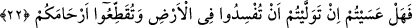
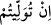

misafirin önünden ekmeğini alıp tamamını dilenciye vermezdin. Ekmeği bölüp yarısını
dilenciye verir yarısını misafire bırakırdın.”
Habîb hiçbir şey söylemedi. Bir saat geçtikten sonra bir çocuk çıkageldi. Başında bir
sofra tepsisi bulunuyordu. İçinde kuzu kebabı, tatlı ve taze ekmekle beş yüz dirhem
vardı. Bunları Habîb’in önüne koydu. Habîb parayı fakirlere dağıttı, sofrayı da
Hasan’ın önüne koydu.
Hasan yemeği yerken Habîb şöyle dedi: “Ey Üstâd sen iyi bir adamsın, bir parça
yakîne sahip olsaydın iyi olurdu. Zira ilmin yakînle beraber bulunması gerekir.”
Yâni kim kesin ve tam bir inanç sahibi olursa Allah Teâlâ kaybettiğinin yerine ona
daha değerli olanı bedel olarak verir. Fazl u keremiyle eksiklerini tedârik ve telâfi eder.
Öyleyse hem küçük cihadda hem de büyük cihadda malı ve tüm varlığı harcayıp fedâ
etmek lâzımdır.
Hafız şöyle demiştir:
Malımızı ve canımızı sevgiliye feda etmedik yazık,
Aşk yolunda bu kadar gösteremedik fedakârlık.
22. Demek işbaşına gelecek olursanız, yeryüzünde bozgunculuk yapacak,
rahimleri (akrabâlık bağlarını) koparacaksınız öyle mi?”
Ey kalplerinde nifak hastalığı bulunan münafıklar “demek” vâliler ve hâkimler olarak
insanların işlerini üstlenip, âmirler ve yöneticiler olarak “işbaşına gelecek olursanız,”
mülk ve saltanat hırsıyla ve gözü kara bir şekilde dünyaya atılmanızla “yeryüzünde
bozgunculuk yapacak, rahimleri (akrabalık bağlarını) koparacaksınız öyle mi?”
Halbuki siz her kötülük ve fesadı bertaraf edecek, her hayır ve iyiliği elde edecek
olan cihad ile emrolunmuş durumdasınız. Böyle bir emir karşısında itâat edip güzel söz
söyleyeceğiniz yerde, sizin dine olan zaafınızı ve dünyaya olan hırs ve arzunuzu
müşâhede eden kimse, yönetimde söz sahibi olduğunuz zaman sizden işte yeryüzünde
yapacağınız bu bozgunculuk ve akrabalık bağlarını koparmanızı bekler.
Rahim kadının karnında çocuğun gelişip korunup büyüdüğü yerdir. Doğum cihetinden
olan yakınlık alaka ve aynı rahimden çıkmış olmalarından dolayı istiare yoluyla bu
yakınlığa rahim denilmiştir.
Hz. Ali (k.v.) bu âyeti ta ve vavın zammesiyle ve lamın kesrası ile
(in
tüvulîtüm) şeklinde okumuştur. Bu durumda mânâ şudur: Yâni zalimler size yönetici
olduklarında siz de onlara meylederek fitne konusunda onlara yardımcı ve destek
olursunuz. Gerçekten de bu durum, günümüzde müşâhede olunan şeylerdir.
Ebû Hayyân’ın ifâdesine göre daha belirgin olan mânâ şudur: Ey münafıklar cihad ve